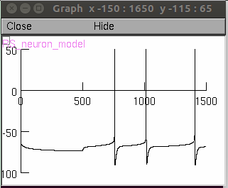

This is the Readme for the model associated with the paper:
Ellen K.W. Brennan, Shyam Kumar Sudhakar, Izabela Jedrasiak-Cape, Tibin T. John & Omar J. Ahmed, Hyperexcitable neurons enable precise and persistent information encoding in the superficial retrosplenial cortex, Cell Reports
File descriptions
LR_neuron_tuned.hoc - Neuron template of Low Rheobase (LR) neuron described in the paper
RS_neuron_tuned.hoc - Neuron template of Regular spiking (RS) neuron described in the paper
test_model_RS.hoc - Test file to run the RS neuron model
test_model_LR.hoc - Test file to run the LR neuron model
How to run the model
Download all files to your computer and cd to the corresponding folder
On the terminal, type "mknrndll (or nrnivmodl)" to complile the .mod files
If you need more help running NEURON on your platform please consult:
https://senselab.med.yale.edu/ModelDB/NEURON_DwnldGuide
Type "nrngui test_model_RS.hoc" or " nrngui test_model_LR.hoc" to run the model
test_model_RS.hoc - creates figure 6B of the paper (low current)

For generating the FI curves (Figure 6D and 6H), please use current clamp (already inserted in the template files) with a delay of 500 ms and duration of 1000 ms.
For accurate results, use a dt of 0.025 ms.
In case of any questions, please send an email to shyamk@umich.edu